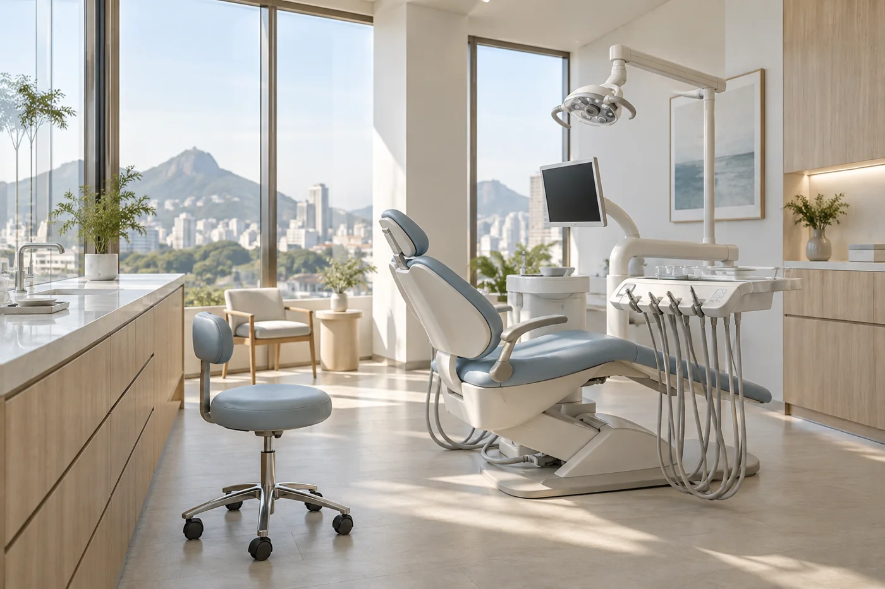
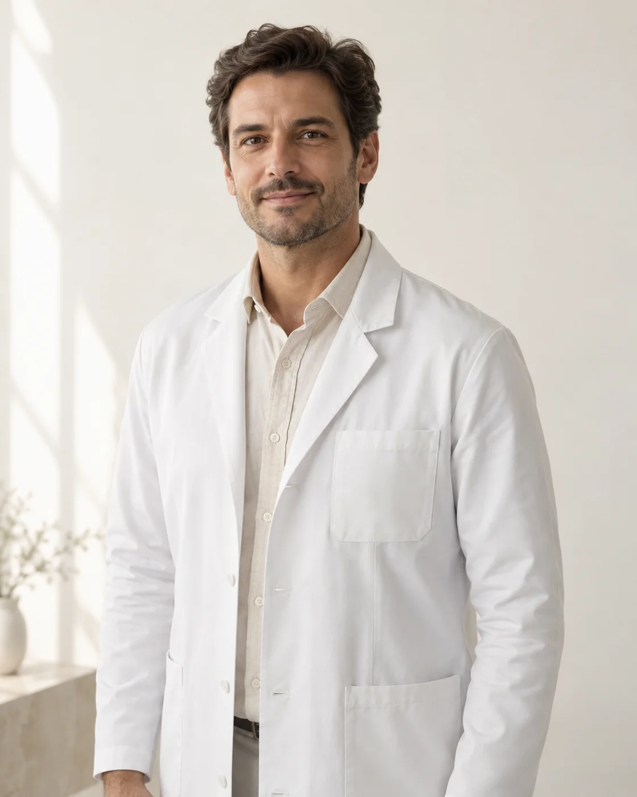

01
Lentes e Facetas
Planejamento estético para transformar forma, proporção e harmonia do sorriso.
Odontologia estética com planejamento individual, tecnologia e cuidado em cada detalhe.
Cada sorriso tem uma história, uma necessidade e um objetivo diferente. Por isso, nossos tratamentos começam pela escuta e por um planejamento feito especialmente para você.
Conheça a clínica
Planejamento estético para transformar forma, proporção e harmonia do sorriso.
Protocolos personalizados para um sorriso mais claro com segurança.
Tecnologia e planejamento para recuperar função, segurança e confiança.
Correção do sorriso de forma discreta, confortável e planejada.
Procedimentos pensados para valorizar a harmonia natural do rosto.
Cuidado contínuo para manter a saúde e a beleza do seu sorriso.
Cada tratamento começa entendendo suas necessidades, expectativas e objetivos.
Recursos digitais auxiliam cada etapa do planejamento e acompanhamento.
Um ambiente pensado para tornar sua experiência tranquila do início ao fim.
Entendemos o que você gostaria de melhorar e quais são suas expectativas.
Analisamos seu sorriso, saúde bucal e possibilidades de tratamento.
Você entende as opções e participa das decisões antes de começar.
Seguimos próximos durante todo o tratamento e depois dele.
Nosso objetivo não é criar sorrisos iguais. É encontrar o equilíbrio entre estética, saúde e naturalidade para que o resultado combine com você.
Odontologia Estética

EQUIPE ILUSTRATIVAImplantodontia
Ortodontia
Profissionais e informações ilustrativas para demonstração do projeto.
Fui atendida com muita calma e consegui entender cada etapa antes de começar.
Gostei principalmente do cuidado em buscar um resultado natural.
Desde o primeiro contato, me senti muito bem orientado.
Depoimentos ilustrativos para demonstração.
É o momento de conversar sobre seus objetivos, conhecer sua saúde bucal e entender as possibilidades de cuidado. O planejamento vem depois dessa escuta.
O WhatsApp é o canal previsto para dúvidas e agendamentos. Neste projeto demonstrativo, os botões exibem uma simulação, sem enviar mensagens.
As condições devem ser conversadas com a equipe após a avaliação e a definição do plano. Esta demonstração não estabelece valores ou políticas comerciais.
O tempo varia conforme as necessidades e o tratamento escolhido. A estimativa é apresentada durante o planejamento individual.
A avaliação é o primeiro passo para conhecer as opções, tirar dúvidas e decidir com tranquilidade. Em uma clínica real, consulte a equipe sobre as condições do atendimento.
Fale com nossa equipe pelo WhatsApp
e tire suas dúvidas.
Odontologia & Estética
São Paulo — SP
Endereço demonstrativo